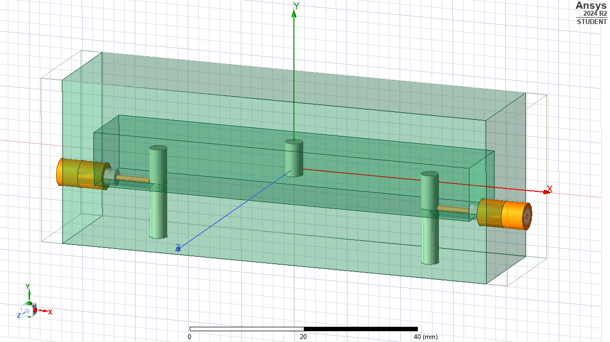
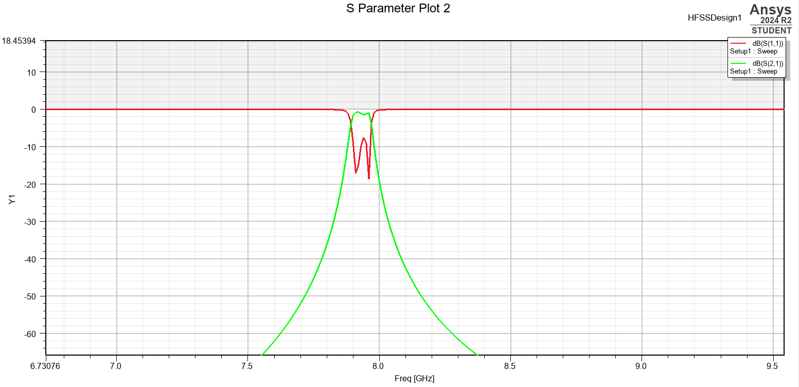
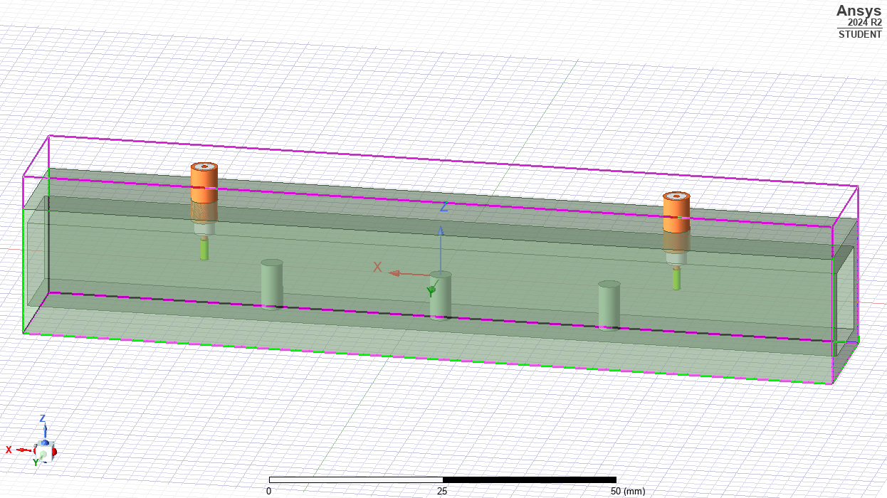
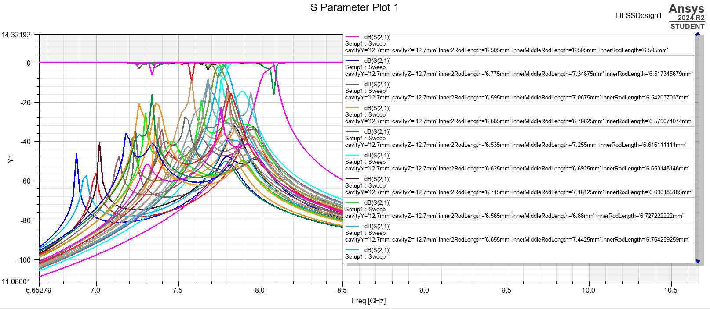
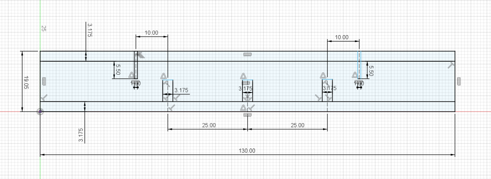
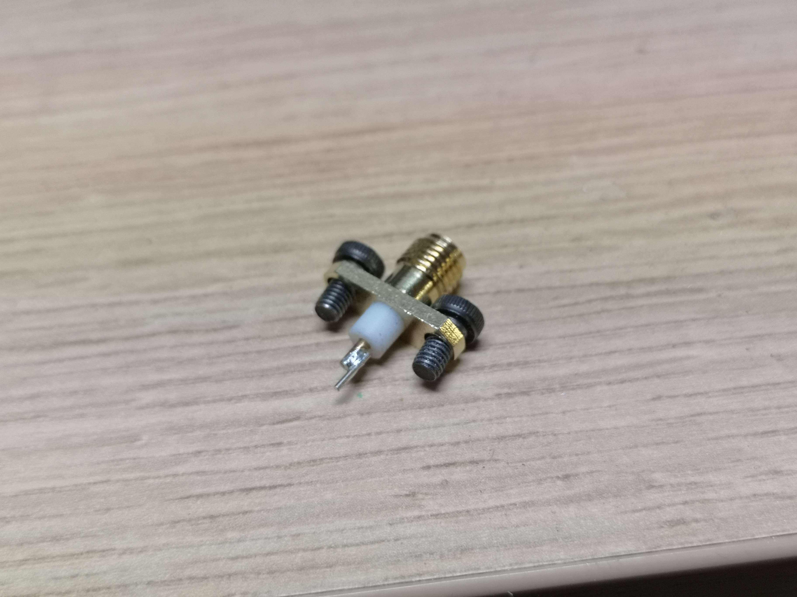
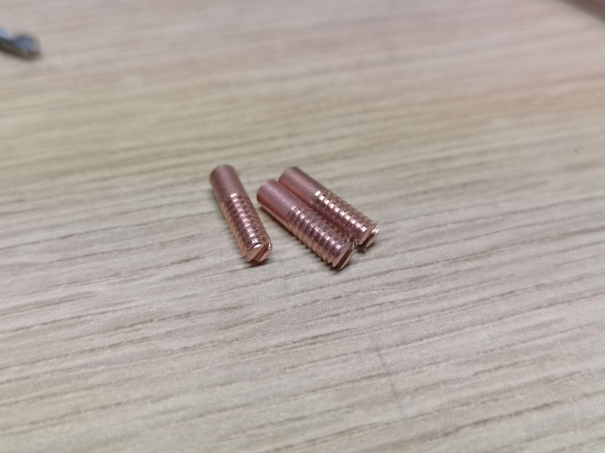
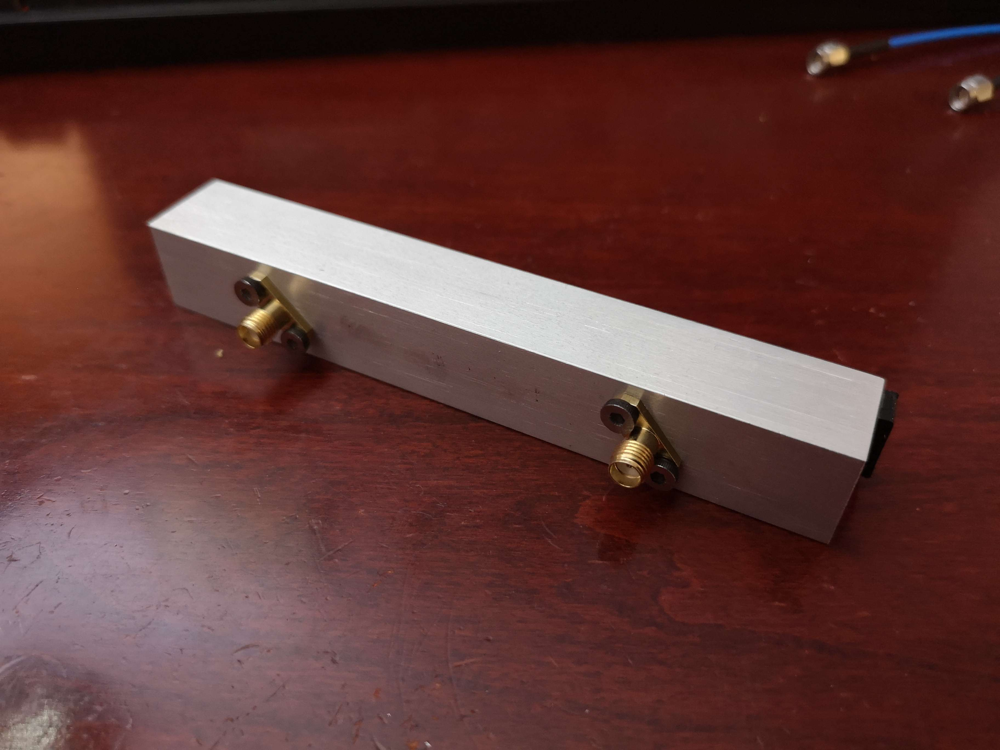
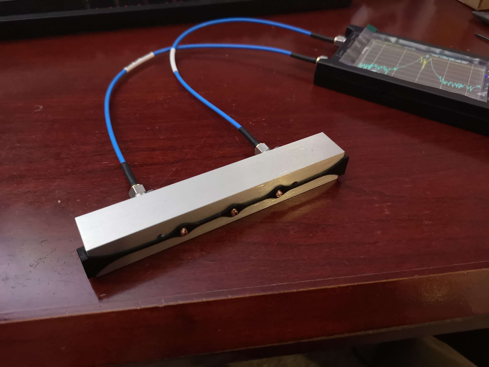
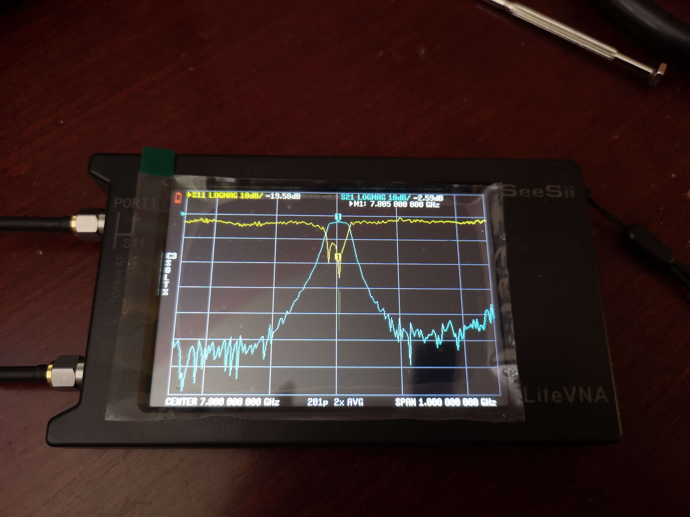

May 6, 2025
Cavity filters are one of the options available when a high performance bandpass or bandstop filter is required for microwave frequencies. They are essentially a distributed element filter made up of a metal cavity of some kind, with some resonators inside. These resonators and the cavity combine to form a high order LC network that has very high Q, and can usually handle quite a lot of RF power. The downside is usually that they are quite large and heavy.
So for reasons, I wanted to obtain such a filter for 7800 MHz, with a bandwidth of around 20-50 MHz. Of course some do exist for sale, but they are obsurdly expensive. Thus, I made attempts to build my own.
Firstly, there exists a page that can calculate the filter dimensions for you, given the center frequency, bandwidth, and a few other parameters. I believe this page uses an adapted version of a BASIC program first introduced in 1985 by J. Hinshaw and S. Monemzadeh.
The issue I had with the calculator is that for 7800 MHz with 20 MHz BW, in addition to the resonant cavity being 9.61mm wide, the coupling tap would need to be 0.14mm away from the bottom of the cavity. This seemed very finicky to me, and in my opinion, it warranted more verification.
I decided to simulate the entire thing using Ansys HFSS. Note this was the first time I have used this software, so it is likely that I am not using the best practices here.

Using the dimensions proposed by the calculator, and slightly adjusting the rod lengths, I was eventually able to obtain this graph. I think my reasoning for playing around with the tuning in software was just to see if it was even possible to obtain good results with tuning. If you want, here are the project variables (dimensions). In this case, the bottom of the cavity had a little half-cylinder shaped indentation to allow the coupling tap to sit 0.17mm high, while being thicker than 0.34mm.

While this filter was possibly viable, it required a bunch of really specific dimensions. Since I don't currently have access to a mill, it would be kind of painful to actually build this.
I came across a very useful page by Matjaž Vidmar, describing several cavity filters he made. His designs are combline, built from aluminum rectangular tube, and don't really have very specific dimensions, apart from perhaps the tuning screw lengths, which can be easily changed. His designs only go up to around 4 GHz, but he goes over a few notable points.
Firstly, the tube's inner dimensions are important, but they do not need to be exact. For the axis in which the resonators will go (height), since said resonators must be slightly less than 1/4 wavelength, the tube must be large enough for them to fit. However, it must not be too large, since above half a wavelength, the tube could start to act like a waveguide and the filter wouldn't be able to block the signals very well, putting a limit on the upper stop band. Ideally, the tube should be around 1/4 wavelength, but it need not be exactly that. The size of the other dimension (width) can be the same as the height or slightly smaller, I do not think it matters critically as long as it is not much larger.
Additionally, according to Vidmar, the spacing between the resonators mostly affects the bandwidth, and the spacing and length of the driven elements affect the coupling to the resonators. This needs to sort of be adjusted, and a graph on Vidmar's page shows this well.
The length of the resonators is perhaps the only parameter that needs to be extremely precise, and these are made to be adjustable.
For my 7800 MHz design, I chose the main cavity to be a 0.75" x 0.75" OD Al. tube, with inner dimensions of 0.5" x 0.5". There would be three resonators, made out of 1/8" copper rod.
This is slightly larger than the ideal size of 9.61mm inner dimensions, but it should work. To ensure that it had any chance of working, I simulated it in HFSS.
After playing around with it a bunch, it seemed that the most promising design was one with around 25mm spacing between the resonators, 10mm spacing between the resonators and the driven elements, and driven elements around 5.5mm long. The end of the tube extends around 30mm beyond the driven elements, and it is not necessary to plug the ends. The rod lengths must be tuned, but nominally they are around 6-7mm long.

I attempted to run an optimization task in HFSS to see if it could find some resonator lengths that could work.

By random chance, it was not able to find any tuning configurations that actually usable, but to me it looked promising enough. (I do this just to see if it is possible for the design to be tuned, I am not actually looking to find exact tuning values). These are the dimensions I used when building it.

The driven elements were quite short, so I just soldered a bit of wire to the SMA connector.

In Vidmar's page, he uses some rather thick aluminum cylinders as resonators, and the tuning screws are inserted from the other side. In my case, since the resonators were so short, I just tap a thread onto them, and use themselves as the tuning screws. Originally I tried using some 6-32 UNC galvanized bolts as resonators. That did work, but the insertion loss was around 6dB. I then made some copper resonators that were not threaded the entire way.

The copper resonators were much better, and the insertion loss went down to around 2.6dB.


This is the finished cavity filter. The resonators were a bit loose, so I 3D printed a little bracket that constantly applies some force in some direction to add a bit of friction to keep them from moving on their own.

Overall the insertion loss is a bit high, but I think it is acceptable. The usable bandwidth is around 40 MHz, and as expected from a cavity filter, the roll off for the stopbands are reasonably steep. I am measuring this with a 6 GHz LiteVNA, so the noise floor at 7.8 GHz is rather bad. Thus I am unable to really know what the stopband attenuation actually is.